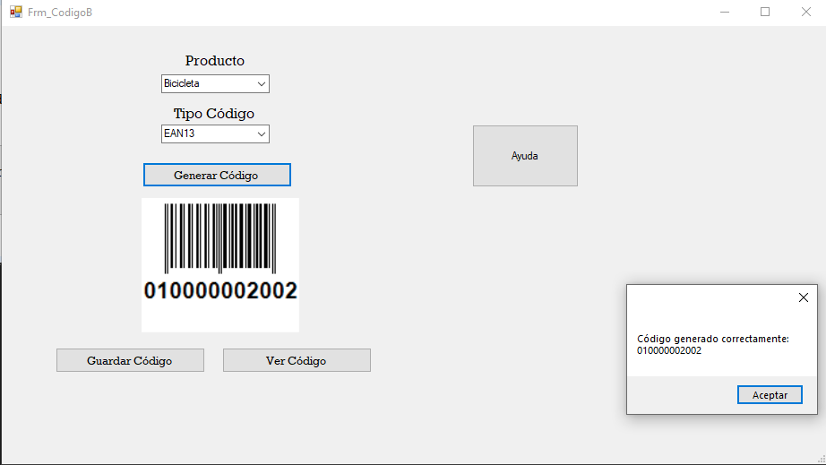
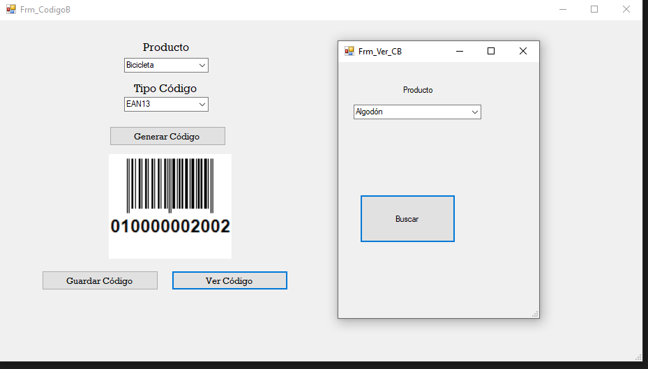

Módulo para generar, almacenar y consultar códigos de barras de productos.
Esta pantalla permite generar un código de barras para un producto seleccionado y guardarlo en la base de datos.

Permite consultar códigos de barras previamente guardados.

| Tipo | Cómo es | Uso |
|---|---|---|
| CODE 128 | Código lineal compacto y flexible. | Inventarios, logística, sistemas empresariales. |
| CODE 39 | Código con letras y números. | Almacenes y control interno. |
| EAN-13 | 13 dígitos estándar comercial. | Supermercados y farmacias. |
| EAN-8 | Versión corta de EAN. | Productos pequeños. |
| UPC-A | 12 dígitos. | Tiendas (principalmente EE.UU). |
| UPC-E | Versión reducida de UPC. | Empaques pequeños. |
| ITF (2 of 5) | Solo números. | Cajas y logística. |
| Codabar | Código simple. | Bibliotecas y laboratorios. |
| QR Code | Código cuadrado 2D. | Links, información digital. |
| Data Matrix | Código 2D compacto. | Medicamentos y piezas pequeñas. |
| PDF417 | Código rectangular 2D. | Documentos y licencias. |
Para este sistema se recomienda utilizar CODE 128, ya que permite manejar códigos internos con letras, números y mayor capacidad de información.